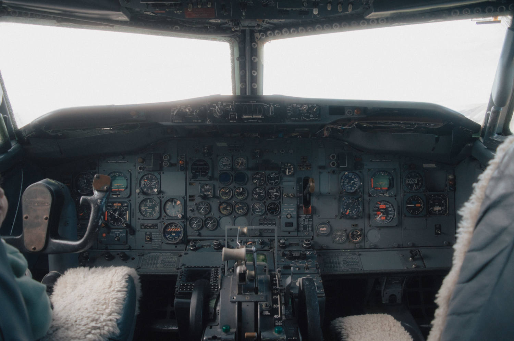
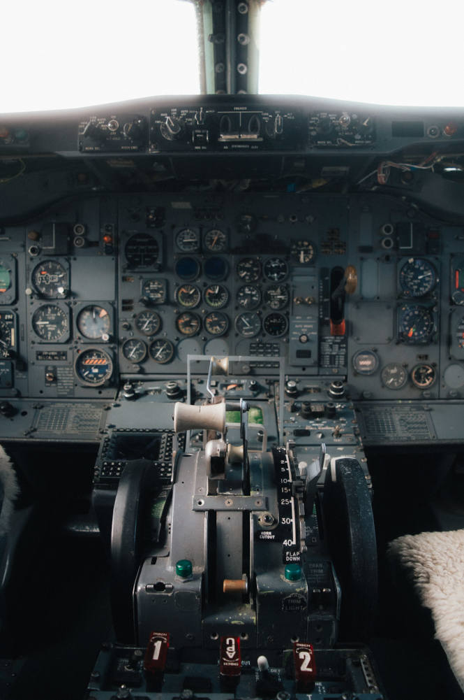
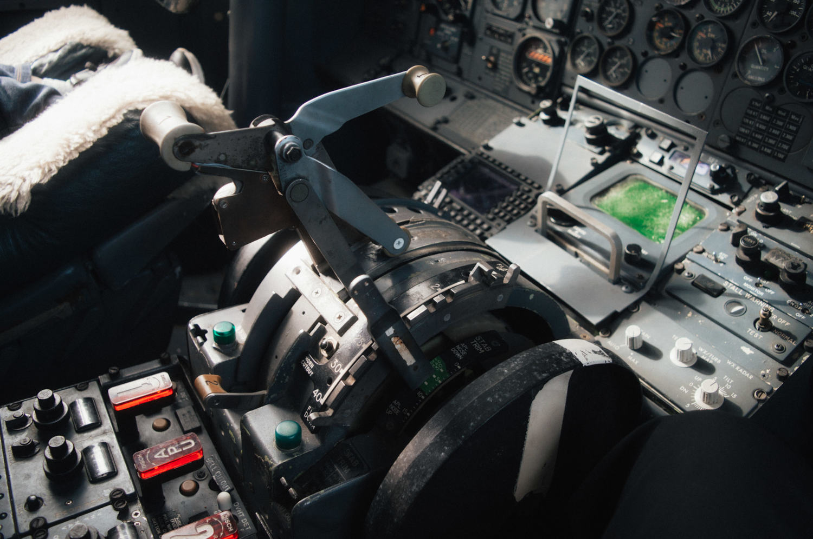
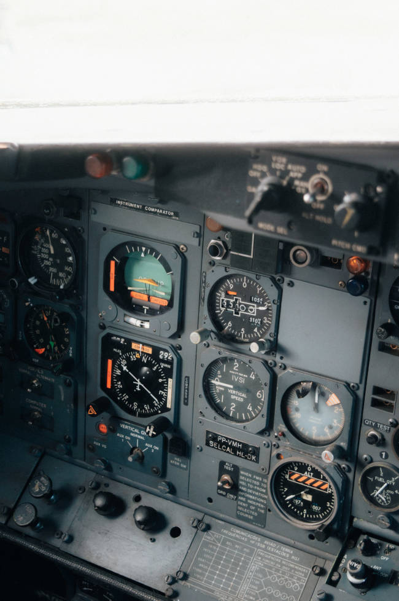
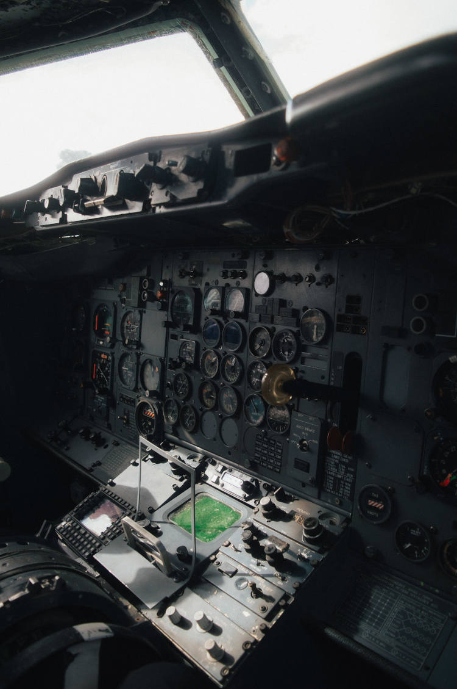
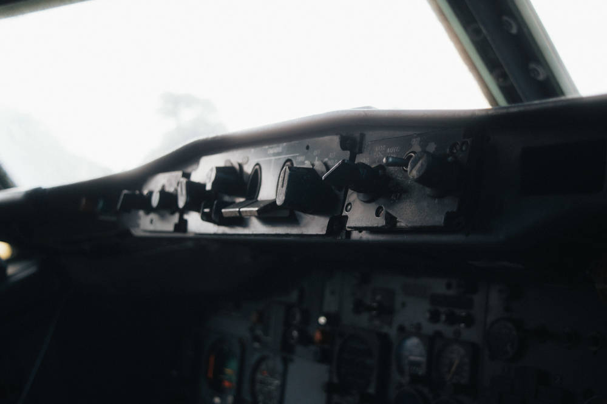

Que pertenceu à antiga VARIG
(Viação Aérea Rio Grandense)

Foto frontal do Cockpit
Podemos ver nos detalhes dos instrumentos, que esse avião segue o modelo antigo, com uma estética característica da era dos anos 1970 e instrumentação analógica.


Foto do Manete de Potência
O Manete de Potência é o controle que regula a potência dos motores, permitindo ao piloto ajustar a velocidade e a performance da aeronave durante o voo.

Foto dos Instrumentos do Cockpit
Nesta aproximação, destacam-se os instrumentos clássicos de navegação e voo, como o horizonte artificial, o altímetro e o indicador de velocidade vertical. O painel revela também a matrícula PP-VMH e a placa do código SELCAL, evidenciando o legado e a complexidade da pilotagem puramente analógica do Boeing 737-200.


Fotos do Manete do Trem de Pouso e Painel De Piloto Automático
Registrada na perspectiva exata que o copiloto teria num dia de sol intenso, a sequência destaca o painel do piloto automático (MCP) no topo do glareshield e a manete do trem de pouso (Landing Gear) ao centro, cercada pelos seletores mecânicos de altitude e pelos clássicos relógios analógicos.
📷Fotos por: Jônatas Valentim